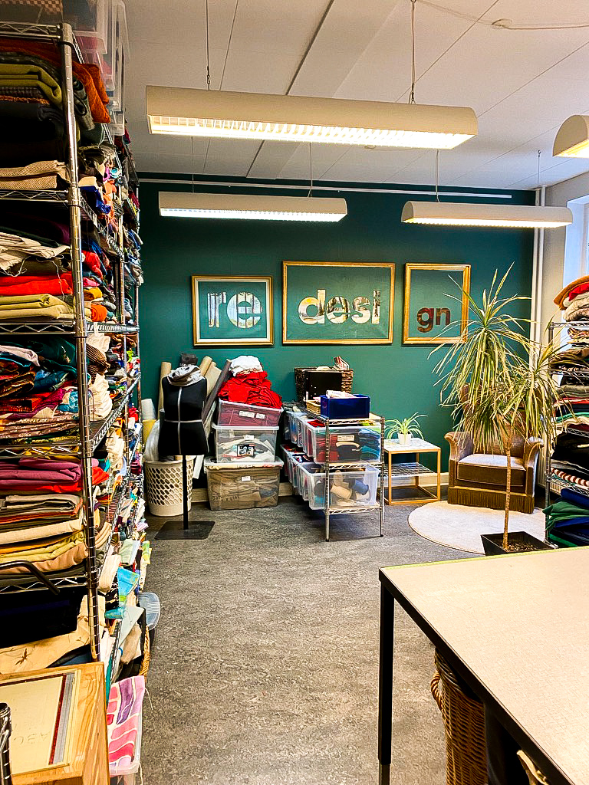

Genbrugsguide
Århus c og Trøjborg
IM Genbrug
Adresse: Nørre Alle 59
IM Genbrug er en relativ billig genbrug, sammenlignet med andre genbrugsbutikker i århus C
Her kan du finde godt og billit stof til dit næste projekt.
Man kan ofte finde sengetøj, stofrester eller andet sytilbehør.
PRAG
Adresse: Nørregade 55
Prag ligger i Århus C. De har et stort udvalg af tøj og accesories til både drenge og piger.
De udvælger og opkøber selv tøjer. Priserne er derfor sat efter det
I Prag har de et lille udvalg af tøj fra deres eget mærke, som er syet om af genbrusstof.

Genbrugsen Tordenskjold
Tordenskjoldsgade 2 Trøjborg
Genbrugsen Tordenskjold er en lidt billigere genbrug
Her kan du finde tøj til drene og piger samt ting til hjemmet
Man kan ofte finde sengetøj, stofrester eller andet sytilbehør.
Kirkens Korshær
Adresse: Nørre Alle 25
Kirkens korshær er lige åbnet op i sidste uge
Hvis du ikke har en symaskine derhjemme, men ønsker at lærer at sy, er dette lige stedet for dig.
Her kan du både gøre bru af deres symaskiner,
få inspiration og købe stof.


Trøjborg Isenkram
Tordenskjoldsgade 57 Trøjborg
Trøjborg isenkram er en isenkrams butik
Her sælger de bl.a. 2. varer sortering af mærkevarer fra butikkerne til billie priser.
De har desuden et stort udvalg af billig stof på mindst halv pris